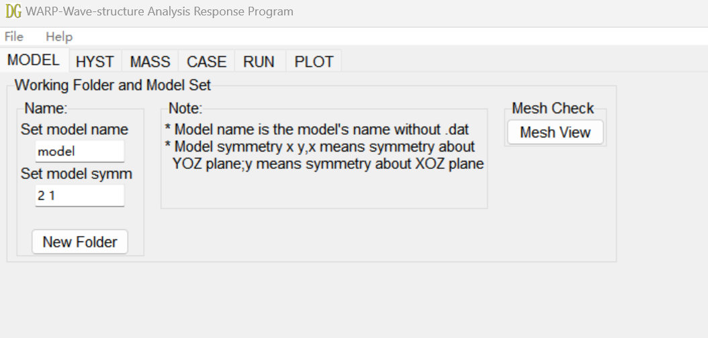
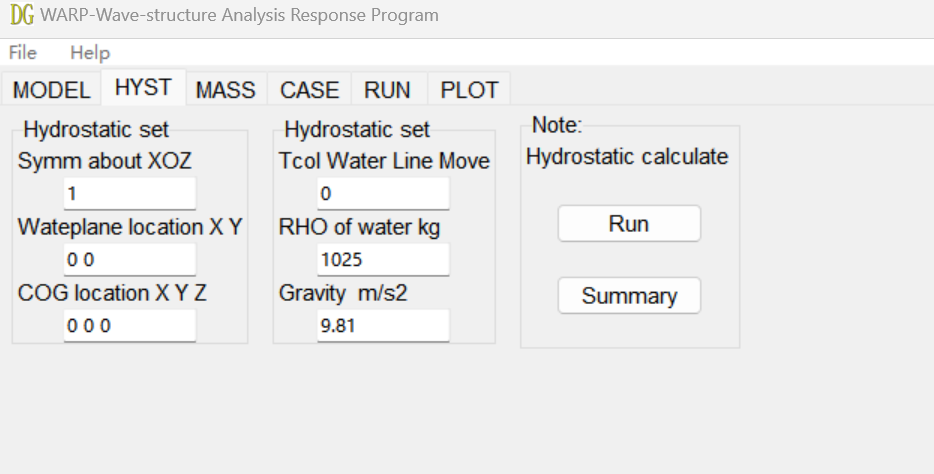
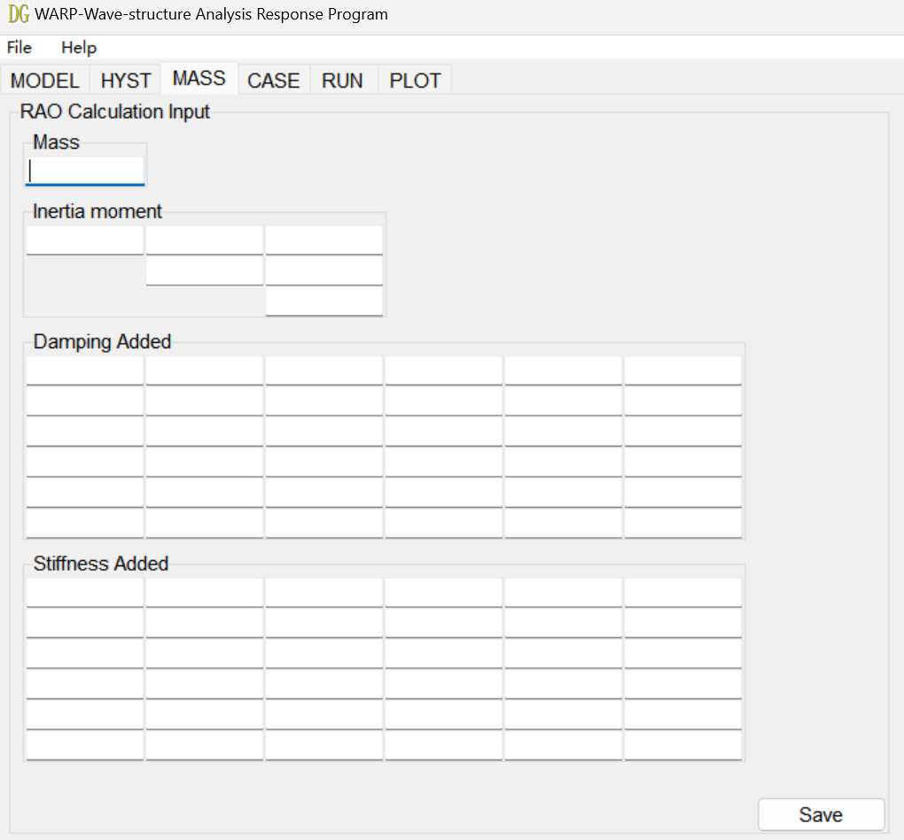
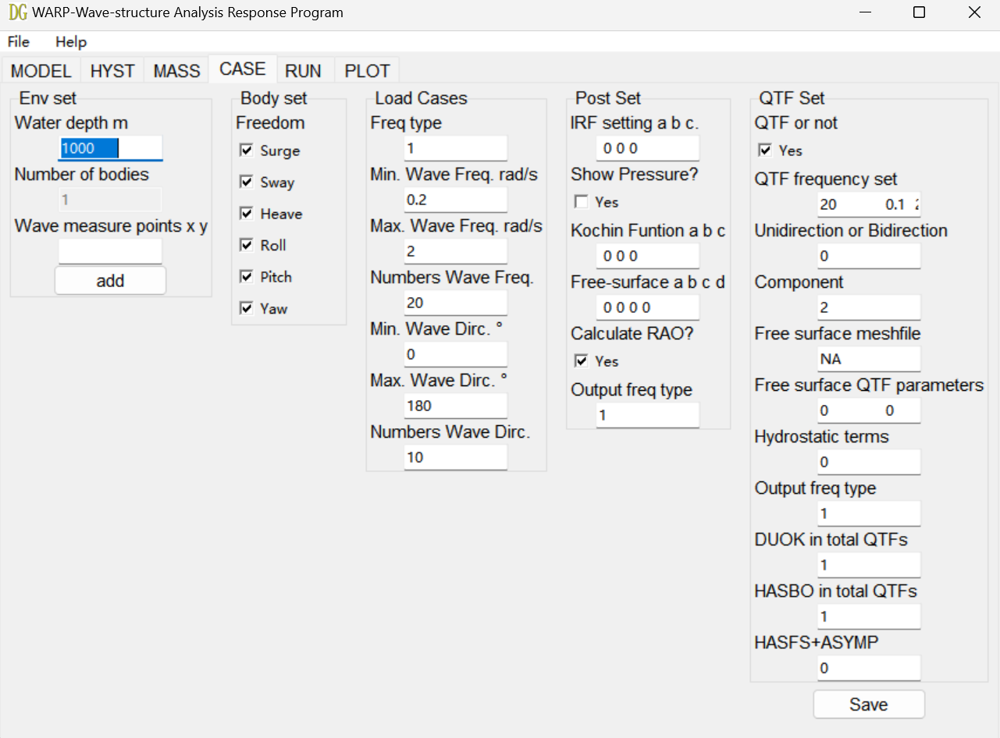
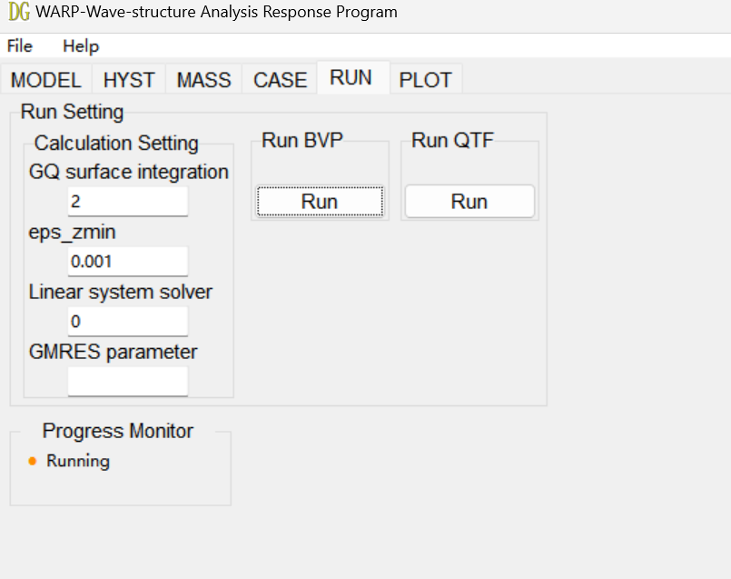
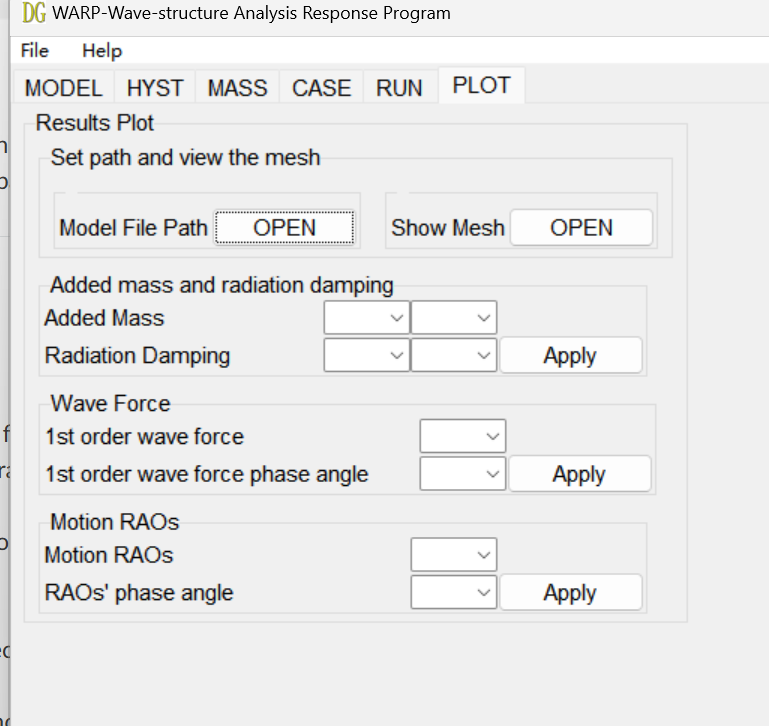

Workflow of WARP
File Directory Structure
The relative paths of folders within the program directory are fixed:
The bin folder contains Nemoh's .exe executable files.
The db folder is the project directory. Project files and model files must have identical names.
Main Menu
File: Displays the current file preparation status and function status.
Save Settings File: Saves the current interface input parameters (file extension: .set).
Read Settings File: Loads the .set file to minimize redundant data entry.

Help:
About: Shows program information (version, author, etc.).
Help: Redirects to the online help page.
Basic Workflow:
1. MODEL
Set Model Name: Enter the model file name (located in the project directory) in the input field. Use English names only (no special characters).
Set Model Symmetry: Input the model symmetry parameters. Click the input field to view formatting hints.
New Folder: Click to create a project folder.
Mesh View: Click to preview the model.

2. HYST (Hydrostatic Calculation)
Symmetry about XOZ: Input the model symmetry parameters. Follow the hints displayed when clicking other input fields.
Run: Click to execute the mesh program and perform hydrostatic calculations.
Summary: Generates a summary_hydrosta.txt file in the project directory, recording basic hydrostatic results.

3. MASS
Input structural mass, moment of inertia, added damping matrix, and added stiffness matrix.
Click Save to store the data.

4. CASE (Hydrodynamic Parameters)
Wave Measure Point X/Y: Input coordinates for wave measurement points and click Add. Note: This feature is currently unstable; use with caution.
Body Set: Select the degrees of freedom (DOFs) to calculate.
Load Cases:
-Input angular frequency (or period/Hz), minimum frequency, maximum frequency, number of frequencies, minimum wave direction, maximum wave direction, and number of wave directions.
-Post Set: Input post-processing parameters as prompted. Ensure "Calculate RAO" is checked only after completing and saving parameters in the MASS tab.
-Output Freq Type: Specify the output frequency type.
QTF Set: Configure parameters for Quadratic Transfer Function (QTF) calculations. Refer to Nemoh’s documentation for advanced settings.
Click Save to store all parameters.

5. RUN
Run Setting: Configure solver parameters (default values recommended). Modify as needed using the input hints.
Run BVP: Click RUN to solve the Boundary Value Problem (BVP) and compute first-order loads/motions.
Run QTF: Click RUN to perform QTF calculations. Ensure all parameters in CASE/QTF Set are configured correctly.

6. PLOT
Model File Path: Click OPEN to select the model path. Use Show Mesh > OPEN to display the model.

Added Mass & Radiation Damping: Select parameters and click Apply to generate plots. Save plots directly from the interface.
1st Order Wave Force/Phase Angle: Select parameters and click Apply to generate plots. Save plots from the interface.
Motion RAO/Phase Angle: Select parameters and click Apply to generate RAO curves. RAO calculations must be completed before plotting.
Key Notes
File Naming: Ensure model and project files have identical names (case-sensitive).
Special Characters: Avoid symbols (e.g., @, #, space) in filenames.
QTF Calculations: Requires precise parameter setup in CASE/QTF Set.
RAO Plots: Only available after MASS parameters are saved and RAO is computed.
Recommended Practices
Use default solver settings unless specific adjustments are required.
Validate mesh quality in Mesh View before running calculations.
Backup project files in the db folder regularly.
For advanced usage, consult the Nemoh official documentation.